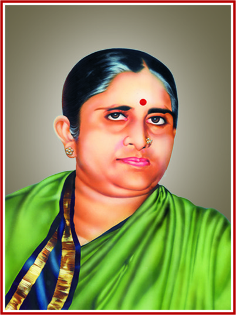

Chief Veda Teacher (Rigveda)
With over 25 years of experience in Vedic teaching, Sri Raghavendra Sharma has trained more than 100 students in Rigveda chanting. He completed his Vedic education from Sri Sringeri Sharada Peetham and specializes in teaching Padapāṭha and Kramapāṭha methods.

Senior Veda Teacher (Sukla Yajurveda)
A Ghanapati in Sukla Yajurveda, Sri Venkateswara Sastry has been teaching for 20 years. He is an expert in ritual procedures (karma-kanda) and has conducted numerous Vedic ceremonies. He completed his education from the Veda Pathasala at Tirupati.

Sanskrit & Veda Teacher
Sri Narayana Sharma holds a Master's degree in Sanskrit from Banaras Hindu University and has 15 years of teaching experience. He teaches Sanskrit grammar, literature, and assists in Vedic chanting classes. He is also responsible for preparing students for board examinations.

Veda Teacher & Alumni
An alumnus of this very Vedapathasala, Sri Krishna Sharma completed his Ghanapati course in 2015 and returned to serve as a teacher. He specializes in teaching beginner students and maintaining the traditional Gurukula atmosphere.
Sri Sri Abhinava Vidyatheertha Bharati Vedapatashala, established in 1997 under the auspices of PACR Sethuramammal Charities, functions with the divine blessings of the Jagadgurus of Sri Sringeri Sharada Peetham. The Patashala is dedicated to preserving and propagating India's ancient Vedic heritage through the traditional Gurukula system of education.
Situated on a serene 24-acre campus generously donated by the RAMCO Cement family, the Patashala features a beautifully built Saradamba Temple, residential facilities for students and teachers, spacious gardens, and a nurturing environment ideal for spiritual and academic learning.
Our mission is to train young students in authentic Vedic chanting, pronunciation, and understanding, ensuring that this sacred knowledge is transmitted with purity to future generations. The Vedapatashala provides free residential education, including food, accommodation, and traditional Vedic training to deserving students.
Around 80 students are currently studying various branches of the Vedas.
Students are admitted from the age of 6 and undergo a 13-year rigorous course, completing their education as Ghanapatis.
Examinations are conducted by MSRVVP Ujjain and Sri Sringeri Sharada Peetham, and certificates are awarded on successful completion.
Students receive Sanskrit education, Yoga classes twice a month, and are supported to appear for 10th and 11th standard board examinations.
Two alumni of the Patashala currently serve as teachers, continuing the lineage of traditional learning.
The Patashala provides a wholesome living environment enriched with modern and traditional facilities:
The campus is managed by dedicated wardens, a committed manager, and support staff who ensure a disciplined, safe, and spiritually uplifting environment for all students.

P.A.C.R. Sethuramammal Charities